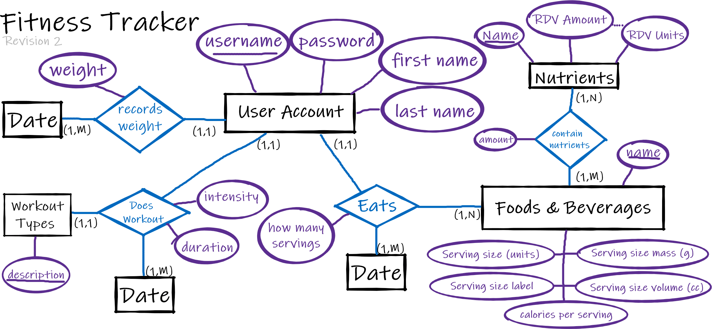

Assignment 1 - Fitness Tracker
The Goal
You are being employed by a company that offers a fitness tracking service.
They are working on a phone app that will allow the user to track what they eat, as well as when/how they wor kout.
Another employee will be designing the user interface, but you are responsible for designingthe database.
Design an ER diagram to fulfill this goal, making sure to meet all of the requirements.
All entities must have an appropriate identifier specified. If a surrogate key is used, explain why a natural key was not appropriate.
In the interests of saving space, attributes that are not part of an identifier may be omitted from the diagram, but they should be included and explained in that portion of your submission.
Requirements
- Every user will have an account, and all of their meals and workouts will be linked to this account.
- To track weight loss, the user will update their weight periodically. This data must be retained.
- The serving size will be some number of units (grams, ounces, Tbsp, cups, lbs, etc.). There will be
information stored for conversion between different unit types.
- There will need to be a database of foods/beverages. Each of these will have information on serving size,
calories per serving, and grams per serving of each of the macronutrients (protein, fat, carbohydrates).
- It should be possible to store information on the quantities of micronutrients or chemicals (i.e. vitamin
D, caffeine) that are present in a given food or beverage in significant amounts. Recommended daily
values for any of these should be stored, when applicable.
- Each time the user eats, a record of who ate how many servings of what and when is stored.
- The app needs to allow a user to track their workouts. This includes the type of the workout, its
intensity, and its duration.
- When a user tracks their workout, a record is created of who did what type of workout, when, and for
how long.
Necessary Views
The data base needs to be able to store its operational data in such a way that the final app will be able to show the following views (at minimum).
You don't need to implement the views, but the necessary data should be modeled.
- A graph will be generated of how many calories a user consumed each day of the week.
- A similar graph will be generated that shows how many calories were burnt each day of the week throughworkout.
- Show a pie graph of the percentage of the diet made up of each macronutrient during a given time period (day, week, month).
- Track the consumption of a given micronutrient/chemical over a specified period of time. If there is a recommended daily value, show a comparison of their consumption with the recommended amount.
- Allow the user to search through the food database to find common foods, in order to plan their diets. These same foods will be used to track their eating.
- The user will search through a list of workouts to find the one closest to the one they're going to do, in order to track the activity.
- A line graph of user weight over time.
Entity Relationship Diagram
